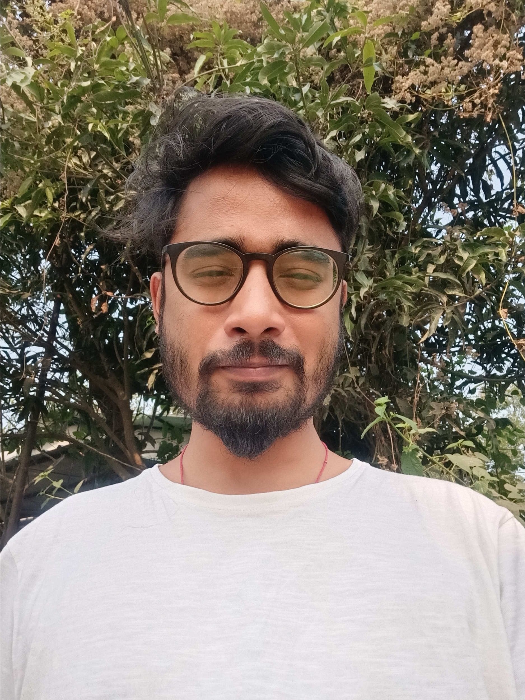

|  |
Brishbhanu BaruahFilmmaker|Photographer He is a transmedia artist who integrates film/video, photographs and text. His thematic concerns expand over the landscape of memory and the individual experience; his work often juxtaposes a play between the mundane and the magical. He specialised in Film Direction from Film and Television Institute of India. He currently works as a freelancer, and accepts commissions worldwide. |
|
|